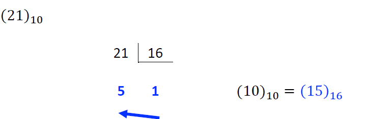
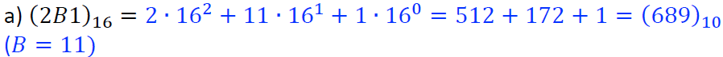
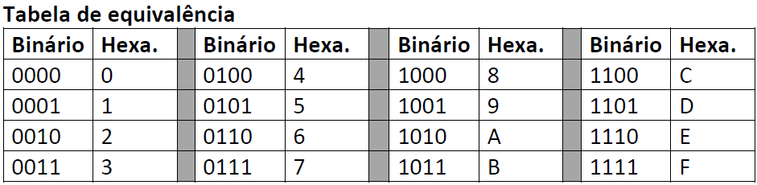
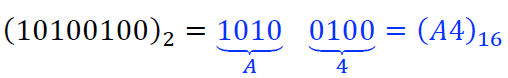

Sistema Hexadecimal
Assim como nos sistemas de numeração citados anteriormente, o sistema hexadecimal é um sistema de numeração posicional onde todos os números são formados por dezesseis símbolos (0, 1, 2, 3, 4, 5, 6, 7, 8, 9, A, B, C, D, E, F). Assim como nos sistemas anteriores, após todos os símbolos serem utilizados para representar as quantidades, combinamos o primeiro símbolo com os demais, e assim sucessivamente.
| Decimal |
Hexadecimal |
Decimal |
Hexadecimal |
| 0 |
0 |
11 |
B |
| 1 |
1 |
12 |
C |
| 2 |
2 |
13 |
D |
| 3 |
3 |
14 |
E |
| 4 |
4 |
15 |
F |
| 5 |
5 |
16 |
10 |
| 6 |
6 |
17 |
11 |
| 7 |
7 |
18 |
12 |
| 8 |
8 |
19 |
14 |
| 9 |
9 |
20 |
14 |
| 10 |
A |
21 |
15 |
Conversões
Base 10 para Base 16:
Para transformar um número decimal em hexadecimal precisamos utilizar o mesmo processo dos sistemas de numeração anteriores, os passos são os seguintes:
- Primeiro dividimos o número decimal por 16 e guardamos o resto;
- Depois dividimos o quociente sucessivamente até que ele se torne menor que 16;
- O número de base 16 vai ser a sequência de restos junto com o último quociente, começando pela direita. Os números 10, 11, 12, 13, 14, 15 devem ser substituídos pelos seus respectivos símbolos (A, B, C, D, E, F).

Exemplo retirado do material disponibilizado pela professora Valéria Lessa
Base 16 para Base 10:
Assim como nos sistemas anteriores, para transformar um número de base 16 em um número de base 10 é preciso multiplicar cada símbolo por potências de 16 de acordo com a posição dos dígitos, começando sempre pela direita (último número).

Exemplo retirado do material disponibilizado pela professora Valéria Lessa
Base 2 para Base 16
Por 16 ser uma potência de 2 é possível realizar um processo parecido com o processo realizado anteriormente no sistema octal, sendo que cada dígito hexadecimal equivale a 4 dígitos binários.

Tabela retirada do material disponibilizado pela professora Valéria Lessa
Para converter um binário em hexadecimal precisa-se seguir alguns passos
- Separar o número binário em grupo de quatro dígitos, acrescentando zeros à esquerda quando necessário;
- Substituir os grupos de binários pelo símbolo hexadecimal equivalente.

Exemplo retirado do material disponibilizado pela professora Valéria Lessa
Voltar a página inicial